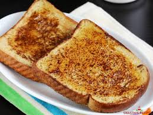

French Toast

Description
English-style french toast.
Ingredients
- Two slices of bread.
- 50g of butter.
- 2 eggs.
- 50g of milk.
Steps
- Heat butter in pan on medium heat.
- Crack and beat eggs on a plate, add milk.
- When pan is hot, soak a piece of bread on both sides in egg mixture.
- Cook both sides of egged bread until slightly brown.
- Repeat above two steps for second piece of bread. Serve and enjoy.